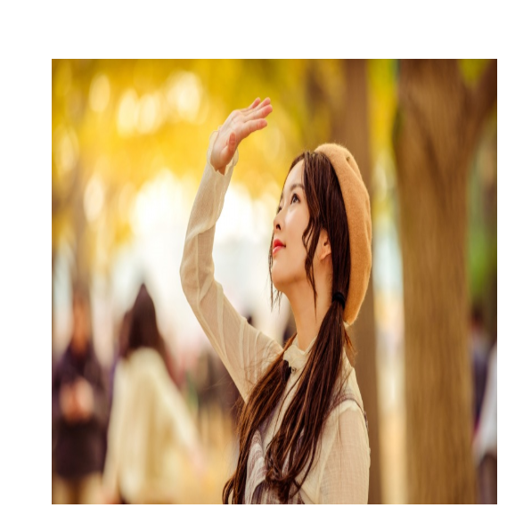
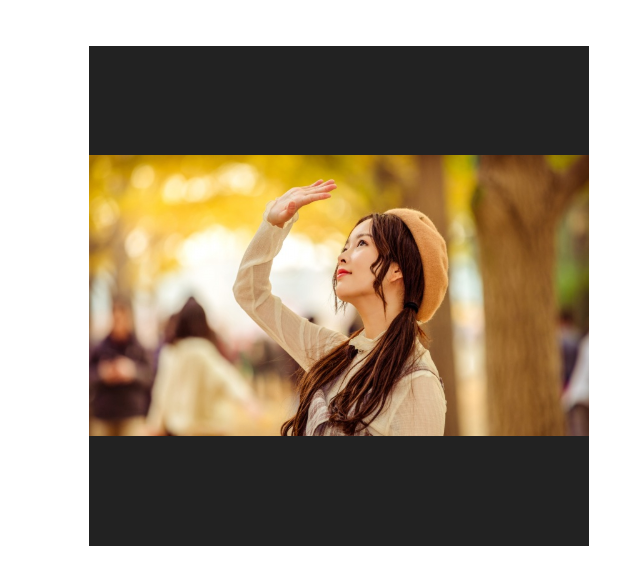
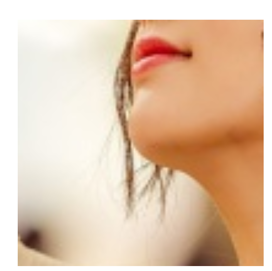

Object-fit
我们有时候浏览一些网站的时候，偶尔会遇到这种情况：
明显它喵的形变了，尤其是这种这么业余的失误，还是出现在一个专门做图片的网站上。
产生这种现象的原因是：图片写了固定的宽高，这个宽高形成了一个固定的比例，然而图片本身不可能总是按照你规定的比例上传上来，只要比例有一点不对，就会产生拉伸形变。
所以我们需要找到一个方式，来应对这种无法避免的情况，这个属性就是CSS中的object-fit属性。
object-fit用于规定可替换元素（最常见的如video，img，iframe）应该如何适应有其宽高所界定的“无形的框”。下面通过一个简单的示例来说明一下object-fit的妙用：

（图片此时宽400px,高400px,背景为黑色，没加object-fit）
当object-fit属性为contain时，表示图片将不形变地最大限度地完整显示在无形框内，且会居中显示。也就是说，图片的宽和高至少有一个会刚好碰到边界，效果如下：

（object-fit: contain）
第二个属性则是cover，它表示图片将在保持自身比例不变的前提下填充整个无形框，换言之，它会牺牲掉一部分边缘图片的内容，如果边缘的图片内容不太重要，可以考虑这个属性，即只保留中心内容：
（object-fit:cover）
第三个属性则是fill，这个属性就是个辣鸡，跟图片不加object-fit的显示效果一毛一样，不知道还留着这个属性干啥，其效果如下：
（object-fit: fill）
第四个属性是none,这个属性可就夸张了，它会按照图片的原始尺寸居中在无形框中显示，所以如果图片很大的话，显示的就会是图片中心的“冰山一角”，慎用！其效果如下：

（object-fit: none）
最后一个属性是scale-down,它是这样的: 如果图片很大，大过无形框，那么它就跟contain属性是一样的效果；如果图片很小，小于无形框，那么它就跟none属性是一样的效果，这个属性用的并不多。
当然你会想到background-size也有类似的属性可以设置，但有些场景就是不适合用background，比如需要一个图片搭配一行文字组成一个卡片，就是因为图片是占位的，所以它与span等标签组合才会如此方便，但是background就不合适，定位太麻烦了。
用的最多的是contain和cover属性。